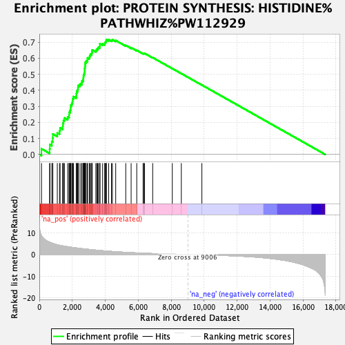
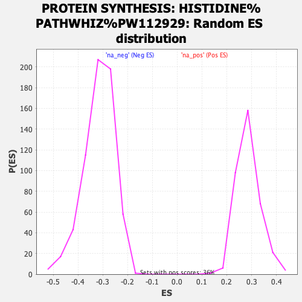

| | | Dataset | ranked_mn_list |
| Phenotype | NoPhenotypeAvailable |
| Upregulated in class | na_pos |
| GeneSet | PROTEIN SYNTHESIS: HISTIDINE%PATHWHIZ%PW112929 |
| Enrichment Score (ES) | 0.7163897 |
| Normalized Enrichment Score (NES) | 2.509372 |
| Nominal p-value | 0.0 |
| FDR q-value | 0.0 |
| FWER p-Value | 0.0 |
Table: GSEA Results Summary

Fig 1: Enrichment plot: PROTEIN SYNTHESIS: HISTIDINE%PATHWHIZ%PW112929
Profile of the Running ES Score & Positions of GeneSet Members on the Rank Ordered List
| SYMBOL | RANK IN GENE LIST | RANK METRIC SCORE | RUNNING ES | CORE ENRICHMENT | | 1 | RPL28 | 131 | 8.722 | 0.0353 | Yes |
| 2 | RPS2 | 626 | 5.645 | 0.0345 | Yes |
| 3 | RPS4X | 639 | 5.619 | 0.0614 | Yes |
| 4 | RPL12 | 756 | 5.287 | 0.0807 | Yes |
| 5 | RPL36 | 815 | 5.120 | 0.1025 | Yes |
| 6 | RPS8 | 819 | 5.115 | 0.1275 | Yes |
| 7 | RPL14 | 1090 | 4.476 | 0.1339 | Yes |
| 8 | RPS19 | 1225 | 4.233 | 0.1469 | Yes |
| 9 | RPL23A | 1259 | 4.191 | 0.1656 | Yes |
| 10 | RPS9 | 1419 | 3.950 | 0.1758 | Yes |
| 11 | RPL7A | 1430 | 3.938 | 0.1946 | Yes |
| 12 | RPS24 | 1465 | 3.899 | 0.2118 | Yes |
| 13 | RPLP2 | 1522 | 3.816 | 0.2274 | Yes |
| 14 | RPSA | 1722 | 3.558 | 0.2333 | Yes |
| 15 | RPL39 | 1806 | 3.458 | 0.2455 | Yes |
| 16 | RPS28 | 1811 | 3.456 | 0.2623 | Yes |
| 17 | RPL13 | 1869 | 3.385 | 0.2757 | Yes |
| 18 | RPL13A | 1897 | 3.345 | 0.2905 | Yes |
| 19 | RPL32 | 1903 | 3.340 | 0.3067 | Yes |
| 20 | RACK1 | 1969 | 3.273 | 0.3190 | Yes |
| 21 | RPL10A | 2011 | 3.239 | 0.3326 | Yes |
| 22 | RPL8 | 2024 | 3.229 | 0.3477 | Yes |
| 23 | RPS20 | 2070 | 3.184 | 0.3608 | Yes |
| 24 | RPS5 | 2241 | 3.022 | 0.3658 | Yes |
| 25 | RPS15 | 2250 | 3.008 | 0.3802 | Yes |
| 26 | RPL4 | 2266 | 2.988 | 0.3940 | Yes |
| 27 | RPL38 | 2326 | 2.928 | 0.4050 | Yes |
| 28 | UBA52 | 2346 | 2.905 | 0.4182 | Yes |
| 29 | RPL31 | 2367 | 2.875 | 0.4311 | Yes |
| 30 | RPS18 | 2471 | 2.790 | 0.4389 | Yes |
| 31 | RPS12 | 2567 | 2.701 | 0.4467 | Yes |
| 32 | RPS11 | 2583 | 2.687 | 0.4590 | Yes |
| 33 | RPS3 | 2655 | 2.625 | 0.4678 | Yes |
| 34 | RPLP0 | 2670 | 2.612 | 0.4799 | Yes |
| 35 | RPL41 | 2680 | 2.606 | 0.4921 | Yes |
| 36 | RPL19 | 2716 | 2.576 | 0.5028 | Yes |
| 37 | RPLP1 | 2745 | 2.554 | 0.5137 | Yes |
| 38 | RPL29 | 2750 | 2.550 | 0.5260 | Yes |
| 39 | RPL35 | 2752 | 2.548 | 0.5385 | Yes |
| 40 | RPS23 | 2771 | 2.531 | 0.5499 | Yes |
| 41 | RPL37A | 2781 | 2.526 | 0.5618 | Yes |
| 42 | RPL10 | 2787 | 2.521 | 0.5739 | Yes |
| 43 | RPL11 | 2844 | 2.478 | 0.5829 | Yes |
| 44 | RPS29 | 2919 | 2.409 | 0.5904 | Yes |
| 45 | RPL27 | 2922 | 2.406 | 0.6022 | Yes |
| 46 | RPL37 | 3033 | 2.309 | 0.6071 | Yes |
| 47 | RPS27 | 3059 | 2.283 | 0.6169 | Yes |
| 48 | RPS6 | 3105 | 2.247 | 0.6254 | Yes |
| 49 | RPL18 | 3178 | 2.202 | 0.6320 | Yes |
| 50 | RPL26 | 3196 | 2.191 | 0.6418 | Yes |
| 51 | RPL23 | 3208 | 2.186 | 0.6519 | Yes |
| 52 | RPL3 | 3429 | 2.009 | 0.6491 | Yes |
| 53 | RPL30 | 3489 | 1.959 | 0.6553 | Yes |
| 54 | RPS25 | 3542 | 1.929 | 0.6618 | Yes |
| 55 | RPL15 | 3585 | 1.893 | 0.6686 | Yes |
| 56 | RPL34 | 3668 | 1.835 | 0.6729 | Yes |
| 57 | RPS3A | 3673 | 1.832 | 0.6817 | Yes |
| 58 | RPS14 | 3674 | 1.832 | 0.6907 | Yes |
| 59 | RPS15A | 3840 | 1.730 | 0.6897 | Yes |
| 60 | RPL27A | 3967 | 1.636 | 0.6904 | Yes |
| 61 | RPL7 | 3987 | 1.621 | 0.6973 | Yes |
| 62 | RPS13 | 4020 | 1.605 | 0.7033 | Yes |
| 63 | RPS7 | 4061 | 1.586 | 0.7088 | Yes |
| 64 | RPS17 | 4066 | 1.582 | 0.7164 | Yes |
| 65 | RPL21 | 4206 | 1.504 | 0.7157 | Yes |
| 66 | RPL35A | 4375 | 1.404 | 0.7129 | Yes |
| 67 | RPS21 | 4432 | 1.371 | 0.7164 | Yes |
| 68 | RPL24 | 4634 | 1.263 | 0.7110 | No |
| 69 | RPS16 | 5244 | 0.978 | 0.6805 | No |
| 70 | FAU | 5570 | 0.845 | 0.6658 | No |
| 71 | RPL36A | 5911 | 0.713 | 0.6497 | No |
| 72 | RPL18A | 6296 | 0.583 | 0.6303 | No |
| 73 | RPS26 | 6329 | 0.572 | 0.6312 | No |
| 74 | RPL6 | 6385 | 0.557 | 0.6308 | No |
| 75 | RPL5 | 6878 | 0.413 | 0.6043 | No |
| 76 | RPS10 | 8068 | 0.152 | 0.5362 | No |
| 77 | RPL17 | 8615 | 0.058 | 0.5049 | No |
| 78 | RPL22 | 9863 | -0.120 | 0.4333 | No |
Table: GSEA details [plain text format]

Fig 2: PROTEIN SYNTHESIS: HISTIDINE%PATHWHIZ%PW112929: Random ES distribution
Gene set null distribution of ES for PROTEIN SYNTHESIS: HISTIDINE%PATHWHIZ%PW112929